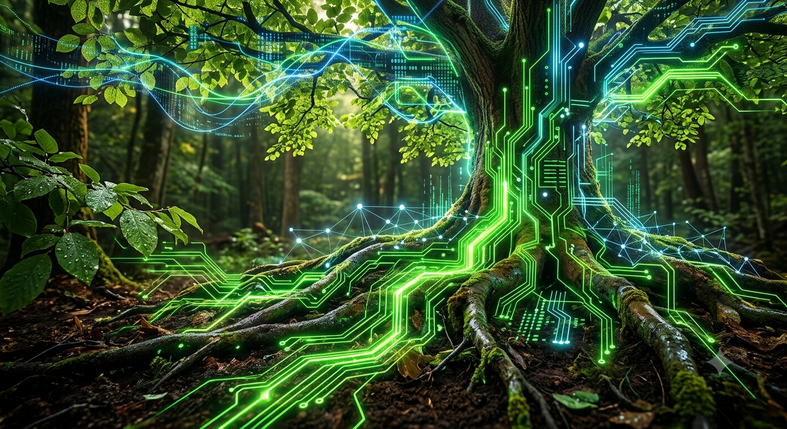

.jpeg)
Para dar profundidade ao tema, podemos dividir o conceito em três eixos narrativos:
1. Produção Inteligente (A Mente)
O que significa: O uso de dados, sensores, inteligência artificial e biotecnologia. É a eficiência máxima por gota de água, por centímetro de solo e por semente. Narrativa: A tecnologia humaniza e otimiza o campo. Produzir inteligência é erradicar o desperdício e antecipar o futuro.2. Meio Ambiente Vivo (O Coração)
O que significa: A transição do conceito de "conservação passiva" para "interação ativa". O solo precisa estar biologicamente vivo, as águas protegidas e a biodiversidade integrada ao manejo (como a agricultura regenerativa e a ILPF - Integração Lavoura-Pecuária-Floresta). Narrativa: O meio ambiente não é um obstáculo para a produtividade; ele é o maior ativo de segurança climática e produtiva do produtor.3. O Novo Agro Forte (O Músculo)
O que significa: A força econômica, a segurança alimentar e a soberania geopolítica do setor, agora redefinidas sob o selo da sustentabilidade global. Narrativa: A verdadeira força não se mede mais apenas em toneladas por hectare, mas na capacidade de alimentar o mundo hoje garantindo que haja terra fértil para o amanhã..jpeg)
Se você for criar materiais gráficos, cenografia ou vídeos para esse tema, busque equilibrar o tecnológico e o orgânico:
Paleta de Cores: Fuja do verde musgo tradicional. Use um Verde Vivo/Neon (representando a tecnologia e a vida pulsante) contrastando com Tons de Terra Profundos (tradição, solo firme) e Toques de Azul Digital ou grafite (conectividade, dados).Texturas: O contraste entre linhas digitais fluidas (circuitos, redes de dados) sobrepostas a imagens de solo rico, folhas com gotas de orvalho e raízes fortes.

.jpeg)